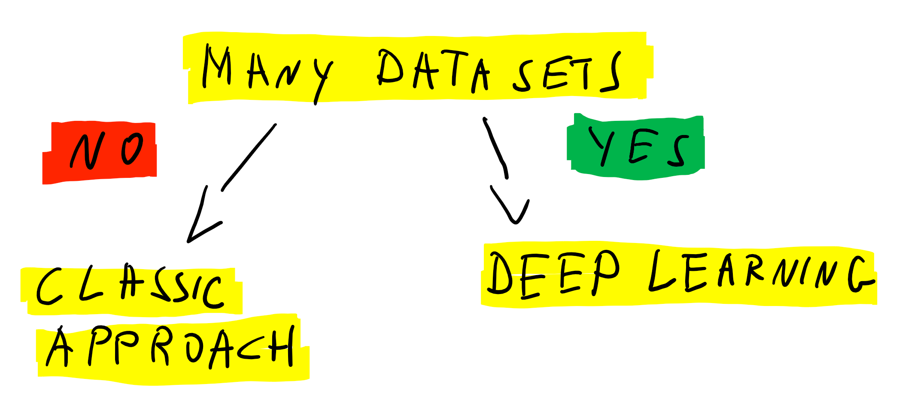

Workshop: Machine Learning auch für Dein Projekt
ML Summit, Berlin, October 2018
Oliver Zeigermann / @DJCordhose / embarc GmbH
https://djcordhose.github.io/ai/2018_ml_summit_application_workshop.html
Teil I
Idee und Arten von Machine Learning
Ein Fallbeispiel
Kunden-Ranking für KfZ-Versicherung

Wie würde ich (47) mit einem 56-PS-Auto abschneiden?
Experiment #1 - Wie funktioniert Supervised Learning?
Bildet Cluster der unterschiedlichen Kundenarten auf dem Handout
- grün (dunkel): guter Kunde
- gelb (hell): mittelguter Kunde
- rot (mittel): schwacher Kunde
Wichtig: Bitte die Cluster mit Kugelschreiber malen und ordentlich aufdrücken
Plötzliche Wendung
Verallgemeinerung und nicht perfekte Wiedergabe ist das Ziel
Es macht keinen Sinn, die Kundenqualität für Daten vorherzusagen, die man schon kennt.
Unser Cluster müssen daher auch für Daten funktionieren, die wir noch nicht betrachtet haben
Experiment #1, Teil #2 - Wie gut hat die Verallgemeinerung funktioniert?
- Bitte umblättern und die durchgedrückten Linien nachzeichnen
- Auf diesem Blatt seht ihr die Testdaten zur Überprüfung des Modells
- Passen eure Cluster immer noch genau so gut auf diese Daten?
- Hättet ihr die Cluster anders eingezeichnet wenn ihr gewusst hättet, dass es um eine Generalisierung geht?
Beispiellösung: Fein

Train

Test
Beispiellösung: Grob
Train

Test
Wie automatisiert man das?
Ansatz: Von Hand kodierte Regeln
if age < 25:
if speed > 140:
return red # young people, fast cars: high risk
else:
return yellow # young people: medium risk
if age > 75:
return red # old people: high risk
if miles_per_year > 30:
return red # a lot of driving: high risk
if miles_per_year > 20:
return yellow # a bit of driving: medium risk
return green # otherwise: low risk
Keine tollen Ergebnisse
Sind das alle Regeln? Sind die richtig?

ca. 43% korrekte Vorhersagen auf unbekannten Daten (raten wäre 33%)
Supervised Machine Learning
Strategien
Klassische Lernstrategien
- Für unser Problem reicht eine der einfachsten Strategien: KNN
- Logistische Regression: Trennung von Klassen per Logistischer Funktion (Sigmoid)
- Decision Trees: Entscheidungsbaum bei dem die Ebenen und Unterscheidungsegeln erlernt werden
Neural Networks (Deep Learning): Zusammenschaltung vieler Logistischer Regressionen

Unsupervised Learning: Clustering
3 Arten von Machine Learning

Daten: Zentraler Punkt

Unsupervised Learning

Reinforcement Learning
Am ehesten die Roboter, die uns Menschen ausrotten
Teil II
Wie findet ihr eigene Anwendungsmöglichkeiten?
Eine Analogie
Die Machine Learning Technologie ist der Motor
Eure Daten sind der Treibstoff
Nur wenn beides da ist läuft die Maschine
Ansatz nach Art der Daten

Fragestellungen
- Was wollt ihr mit ML erreichen?
- Habt ihr Daten und wenn ja was für welche?
Mögliche Ziele
- weniger Fehler
- intuitive Bauchentscheidungen los werden
- schnelleres Arbeiten, höherer Durchsatz
- bessere Qualität, zufriedenere Kunden
- Personal einsparen
- Kreativität fördern oder erst ermöglichen
Beispiele
Bessere Qualität, Personal einsparen
Zalando streicht 250 Stellen in der Marketingabteilung am Unternehmensstandort Berlin. Werbe-E-Mails sollen in Zukunft verstärkt von Algorithmen oder Künstlicher Intelligenz verschickt werden.
"Wir gehen davon aus, dass Marketing in Zukunft noch datenbasierter sein muss. Dafür brauchen wir einen höheren Anteil an Entwicklern und Datenanalysten", sagt Rubin Ritter, Co-Chef von Zalando, gegenüber der FAZ.
Minimale Information reicht, um ein gutes Angebot zu machen

schnelleres Arbeiten, höherer Durchsatz

Welche Dokumente hat der Kunde eingericht?
... schwerer als man denken könnte
sehr ähnliche Farbe

dasselbe Format wie die
moderne Version der Führerscheins
Einfache Regeln reichen oft nicht
Customer Churn / Conversion
Kunde vor und nach Abschluss


Glaskugel
Wie verhält sich jemand, der später Kunde wird / kündigt?
Weitere Anwendungsgebiete
- Recommendation Systems: Spotify und Netflix kennen mich besser als ich mich selbst
- Making decisions: Sollte jemand einen Kredit bekommen oder versichert werden?
- Fraud Detection: Sieht eine Kredit-Karten-Transaktion oder eine Steuererklärung ungewöhnlich aus?
- Predictive Maintenance: KI systems sagen wann man ein Wasserrohr ersetzen soll bevor es bricht
- Expert System: Zuordnung von Krankheit und Maßnahmen
Abschlussübung: Machine Learning in eurem Bereich
Stelle deinen Arbeitsbereich deinem oder mehreren Nachbarn vor- Sind Daten da? Könntne sie beschafft werden? Wie sehen die Daten aus?
- Was soll erreicht werden?
- Welche Genauigkeit müsste erreicht werden?
- Ist diese Genauigkeit realistisch zu erreichen?
- Welche Art(en) von Machine Learning würde sich hier eignen?